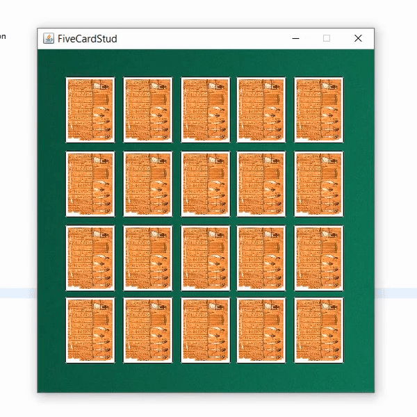

How to Play | What is this?
The objective of the game is to get the best 5-card poker hand!
You are playing against 3 others in the game of 5-card-stud. You are on the top row, and the five-cards shown is your current hand. A dialog box is prompted to ask you how many cards you'd like to exchange, and a second one to ask you which index. Then all cards of opponents are shown, and the best hand amongst the player wins.
Important Design Queries
- How does one verify what kind of five-card-hand a given player has?
- How does one evaluate "better" hands and compare them?
- How does one create an interface where cards can be "flipped face-up", "move", or "shuffled"?
What I learned
- Java as a programming language really taught me the importance of creating a good hierarchy of data. And creating not just methods, but interfaces to interact with the abstract data classes.
- How images are rendered, and the math that goes along with correct spacing by creating nice margins, or how simple rules when applied to many items such as, "don't move if you're at your final position, otherwise move towards the final position" can create some beautiful animations.
- This project also provided a new perspective in poker, by not only what cards are considered "good" from regular poker meta, but evaluating my entire hand as a whole to maximize my hand's value.
Points of Weakness & Things to Improve
- The interface where the user would submit input is terrible. It's clunky, error prone, and is overall a bad design choice I hastily made for a minimum viable product. A better design choice would have been to make the top five cards "click-able" by creating a tile mapping behind the cards.
- The layout of how the cards were shown, and the position of the cards could be improved. The idea of "ownership", that the user's cards were the top 5 cards is a really hard idea to represent simply, and conveying what was going on is a tricky task.
- Creating artificial intelligience that interacts with the player to create a more poker-like environment. And to have different strategies to maximize their current score, such as a greedy method, a heuristic model, or just any kind of smarts.